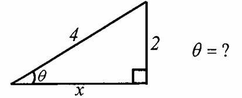
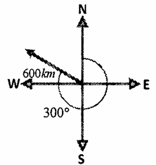
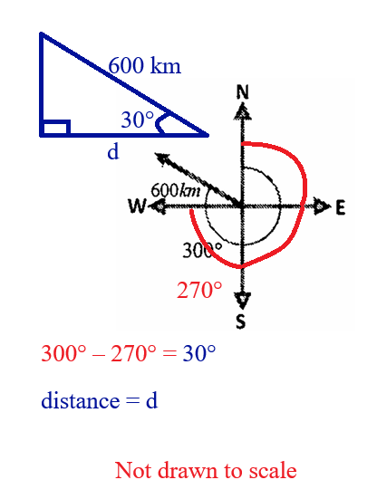
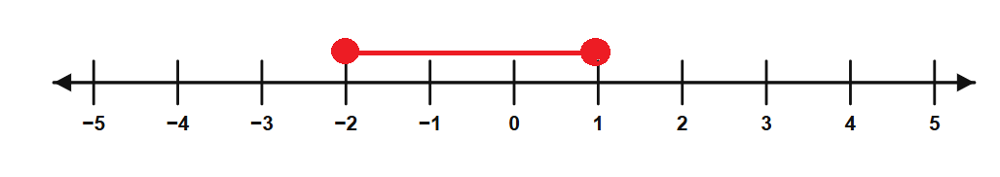
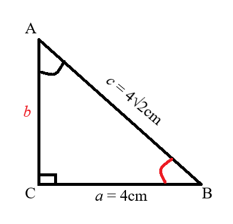
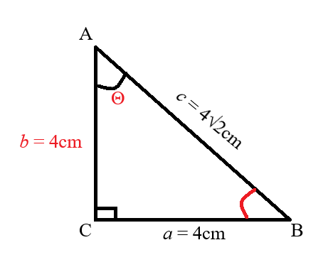
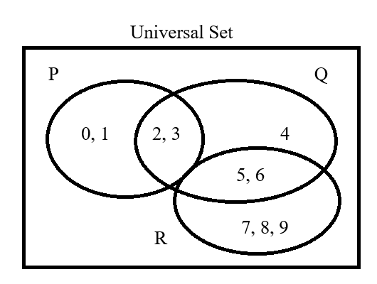
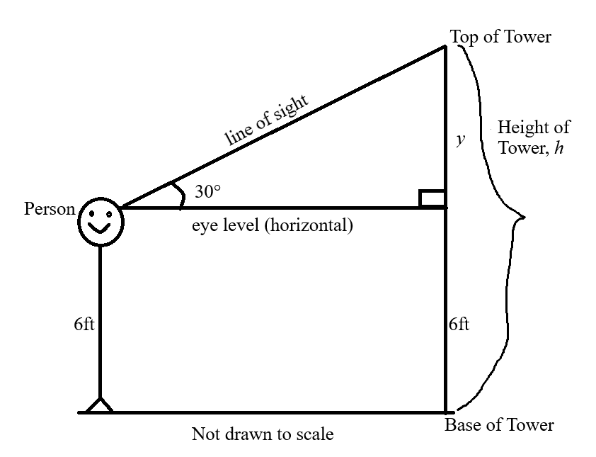
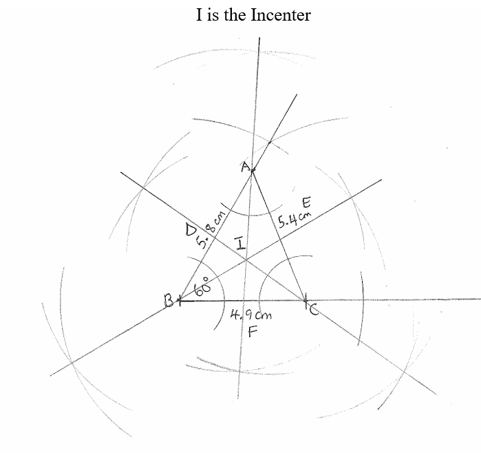

The Joy of the Teacher is the Success of the Students. – Samuel Dominic Chukwuemeka
I greet you this day,
These are the solutions to the Federal Board of Intermediate & Secondary Education: Secondary School Certificate
I (SSC-I) 2026 Mathematics questions.
Please review the Formulas, rules/laws, and theorems on the website for each topic as applicable.
If time permits and there is sufficient interest, video solutions may be provided. Please subscribe to the
YouTube channel to be notified
of upcoming livestreams.
You are welcome to ask questions during the video livestreams.
If you find these resources valuable and if any of these resources were helpful in your passing the
Mathematics tests/exams, please consider making a donation:
Cash App: $ExamsSuccess or
cash.app/ExamsSuccess
PayPal: @ExamsSuccess or
PayPal.me/ExamsSuccess
Venmo: @ExamsSuccess or
Venmo.com/u/ExamsSuccess
Square: Exams Success
Buy Me a Coffee: Exams Success
Buy Me a Coffee @ Ko-Fi: Exams Success
Your donation is appreciated.
Comments, ideas, areas of improvement, questions, and constructive
criticisms are welcome.
Feel free to contact me. Please be positive in your message.
I wish you the best.
Thank you.









| $CI$ | $140 - 150$ | $150 - 160$ | $160 - 170$ | $170 - 180$ | $180 - 190$ |
| $f$ | 6 | 9 | 13 | 7 | 5 |
| $\text{Class Intervals, $x$}$ | $\text{Midpoint, $x_{mid}$}$ | $\text{Frequency, $f$}$ | $x_{mid} \times f$ |
| $140 - 150$ | $ \dfrac{140 + 150}{2} = 145 $ | $6$ | $870$ |
| $150 - 160$ | $ \dfrac{150 + 160}{2} = 155 $ | $9$ | $1395$ |
| $160 - 170$ | $ \dfrac{160 + 170}{2} = 165 $ | $13$ | $2145$ |
| $170 - 180$ | $ \dfrac{170 + 180}{2} = 175 $ | $7$ | $1225$ |
| $180 - 190$ | $ \dfrac{180 + 190}{2} = 185 $ | $5$ | $925$ |
| $\Sigma f = 40$ | $\Sigma (x_{mid} \times f) = 6560$ | ||